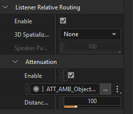

대규모 프로젝트에서 포지셔닝 설정의 일관성을 지킨다
포지셔닝과 어테뉴에이션은 오브젝트마다 따로 설정되기 때문에, 프로젝트가 커지면 설정이 조금씩 어긋납니다. 이 툴은 계층 전체를 한 번에 훑어 두 설정이 서로 모순되는 오브젝트만 뽑아 보여줍니다.
게임에서 드러나는 사고는 두 가지이고, 둘 다 작업 중에는 눈에 잘 띄지 않습니다. 가까이서만 들려야 하는 소리가 어디서든 풀볼륨으로 들리는 경우 — 3D인데 감쇠가 없는 상태입니다. 반대로 화면에 고정되어야 할 소리가 거리에 따라 줄어드는 경우 — 2D인데 감쇠가 걸린 상태입니다.
둘 다 원인은 하나입니다 — 포지셔닝 그룹과 어테뉴에이션 그룹의 상태가 서로 맞지 않는 것. 툴은 오브젝트마다 두 그룹을 읽어 비교하고, 어긋난 것만 보고합니다. 판정은 Wwise의 상속 방식을 그대로 따라가므로, 조상에 설정된 값도 런타임에 적용되는 것과 같은 기준으로 평가됩니다.
탐지 대상
- 3D인데 감쇠 없음 — 거리와 무관하게 풀볼륨
- 2D인데 감쇠 있음 — 고정되어야 할 소리가 거리에 따라 줄어듦
- 한 번의 스캔으로 양방향 동시 탐지, 행 색상으로 구분
설계 원칙
- 읽기 전용 — 프로젝트를 수정하지 않음
- 상속을 따라감 — 로컬 값이 아니라 실제 적용값으로 판정
- 예외는 지속 — 의도된 설정은 바뀔 때까지 조용히
네 개의 설정, 두 개의 그룹, 하나의 비교
Wwise Property Editor의 네 항목을 읽어 두 그룹으로 묶고, 그 두 그룹을 비교합니다. 서로 맞으면 정상, 어긋나면 위반입니다.
Listener Relative Routing 에서 둘, Attenuation 에서 둘

검사하는 네 항목은 Property Editor의 이 두 섹션에 있습니다.
두 그룹이 맞으면 통과, 어긋나면 위반
네 항목의 모든 조합과 판정 결과
16가지 중 6가지가 위반입니다. 나머지는 일관된 상태이며, 설정이 있어도 런타임에 효과가 없어 정상으로 분류되는 경우가 몇 가지 포함됩니다.
| # | ① LRR Enable | ② 3D Spatialization | ③ ATT Enable | ④ ATT ShareSet | 판정 |
|---|---|---|---|---|---|
| 1 | ON | Position(+Ori) | ON | 설정 | 정상 |
| 2 | ON | Position(+Ori) | ON | 없음 | 위반 |
| 3 | ON | Position(+Ori) | OFF | 설정 | 위반 |
| 4 | ON | Position(+Ori) | OFF | 없음 | 위반 |
| 5 | ON | None | ON | 설정 | 위반 |
| 6 | ON | None | ON | 없음 | 정상 |
| 7 | ON | None | OFF | 설정 | 정상 |
| 8 | ON | None | OFF | 없음 | 정상 |
| 9 | OFF | Position(+Ori) | ON | 설정 | 위반 |
| 10 | OFF | Position(+Ori) | ON | 없음 | 정상 |
| 11 | OFF | Position(+Ori) | OFF | 설정 | 정상 |
| 12 | OFF | Position(+Ori) | OFF | 없음 | 정상 |
| 13 | OFF | None | ON | 설정 | 위반 |
| 14 | OFF | None | ON | 없음 | 정상 |
| 15 | OFF | None | OFF | 설정 | 정상 |
| 16 | OFF | None | OFF | 없음 | 정상 |
Wwise가 해석하는 방식대로, 실제 적용값으로 판정한다
오브젝트에 적힌 값이 실제로 적용되는 값과 다를 수 있습니다. 툴은 계층을 거슬러 올라가 Override Positioning이 체크된 가장 가까운 조상을 찾아 그 값으로 판정합니다 — Wwise가 런타임에 쓰는 값과 같습니다.
전체를 훑거나, 지금 작업 중인 가지만 훑는다
Actor-Mixer Hierarchy에서 원하는 노드를 골라 스캔 범위를 좁힐 수 있고, 오브젝트 타입도 켜고 끌 수 있습니다. 아무것도 선택하지 않으면 전체가 대상입니다.

범위 좁히기
Ctrl / Shift로 여러 노드를 골라 그 가지만 스캔합니다. 선택을 비우거나 루트만 선택하면 계층 전체를 훑습니다.
오브젝트 타입
- Sound
- ActorMixer
- RandomSequenceContainer
- BlendContainer
- SwitchContainer
기본값 — Sound와 Containers 모두 켜져 있습니다. 컨테이너를 끄면 말단 사운드만 봅니다.
위반 행에서 Wwise 오브젝트까지, 더블클릭 한 번
각 행에는 판정 근거가 된 실제 적용값이 함께 들어 있어, Wwise를 열지 않고도 판단할 수 있습니다. 더블클릭하면 Project Explorer에서 그 오브젝트가 바로 선택됩니다.

목록 다루기
헤더를 클릭해 정렬하고, 드래그해 컬럼 순서를 바꾸고, 여러 행을 선택해 한꺼번에 처리합니다.
행에서 할 수 있는 것
- 더블클릭 — Wwise Project Explorer에서 해당 오브젝트 선택
- 다중 선택 — 의도된 설정을 예외로 일괄 등록
- CSV 내보내기 — UTF-8 BOM, Excel에서 바로 열림
표시 — 위반 종류는 Issue 컬럼과 행 색상 양쪽으로 보여줍니다.
각 컬럼이 담는 내용
| 컬럼 | 의미 |
|---|---|
| Name | 위반 오브젝트 이름 |
| Type | Sound · ActorMixer · RandomSequenceContainer · BlendContainer · SwitchContainer |
| 3D Spatialization | 실제 적용값 — None / Position / Position + Orientation |
| Attenuation | ShareSet 이름. Enable이 꺼져 있으면 (disabled) 표시 |
| Issue | 두 위반 종류 중 어느 것인지 |
| Work Unit | 소속 워크유닛 |
| Path | Wwise 내 전체 경로 |
의도된 설정은 조용히 — 바뀌면 다시 올라온다
어긋난 설정이 의도된 것일 때가 있습니다. 예외로 등록하면 위반 목록에서 빠집니다. 이후 그 오브젝트의 설정이 바뀌면 예외가 스스로 풀리고 다시 목록에 나타납니다.